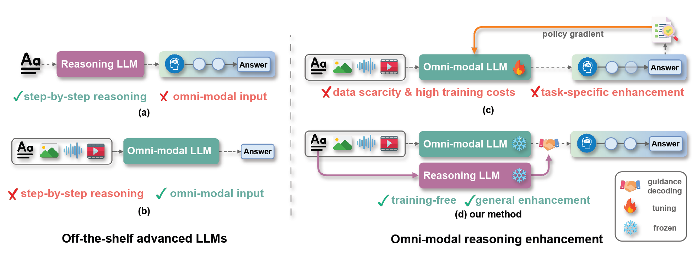
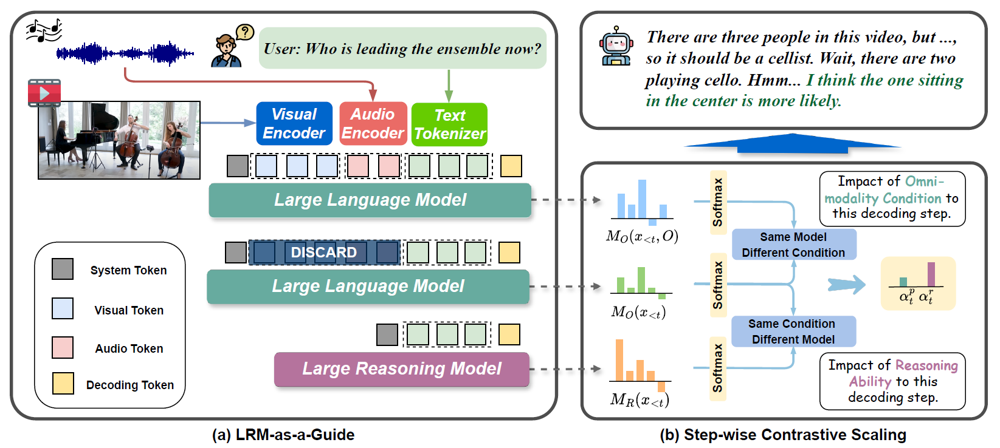
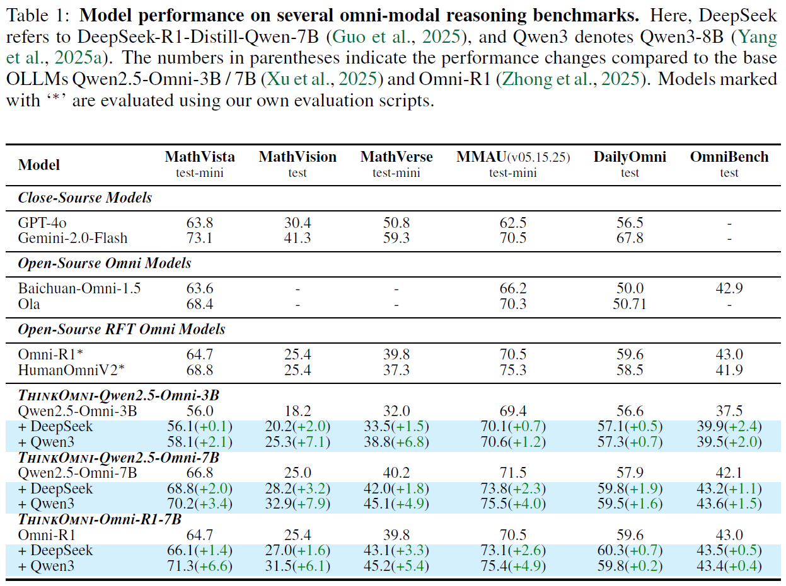

Figure 1: Comparison between existing methods and ThinkOmni. We integrate an OLLM with an LRM via guidance decoding, enabling advanced reasoning abilities with omni-modal input without additional training.
Omni-modal reasoning is essential for intelligent systems to understand and draw inferences from diverse data sources. While existing Omni-modal Large Language Models (OLLM) excel at perceiving diverse modalities, they lack the complex reasoning abilities of recent Large Reasoning Models (LRM). However, enhancing the reasoning ability of OLLMs through additional training presents significant challenges, including the need for high-quality data, task-specific adaptation, and substantial computational costs.
To address these limitations, we propose ThinkOmni, a training-free framework that lifts textual reasoning to omni-modal scenarios. ThinkOmni introduces two key components: 1) LRM-as-a-Guide, which leverages off-the-shelf LRMs to guide the OLLM decoding process; 2) Stepwise Contrastive Scaling, which adaptively balances perception and reasoning signals without manual hyperparameter tuning.
Experiments on six multi-modality reasoning benchmarks demonstrate that ThinkOmni consistently delivers performance improvements, with main results achieving 70.2% on MathVista and 75.5% on MMAU. Overall, ThinkOmni offers a flexible and generalizable solution for omni-modal reasoning and provides new insights into the generalization and application of reasoning capabilities.

Overview of ThinkOmni. The framework begins by separating input modalities of the OLLM and introducing the LRM as a guiding model. Stepwise Contrastive Scaling dynamically adjusts guidance parameters based on real-time prediction analysis, enabling adaptive and effective decoding across diverse tasks.
Specifically, we employ a guidance decoding strategy where the OLLM provides the base multi-modal understanding. To inject reasoning capabilities, we treat the LRM's output as a positive guide while using the OLLM's text-only output as a negative reference. This process effectively amplifies the reasoning signal within the decoding process.
Crucially, rather than applying a fixed weight to this guidance, our method utilizes Stepwise Contrastive Scaling. This module dynamically balances the influence of perception (from the OLLM) and reasoning (from the LRM) at every token generation step by measuring the divergence between their probability distributions. This ensures the model relies on reasoning when logic is required, and on perception when processing multi-modal details.
Extensive experiments conducted on six challenging multi-modal reasoning benchmarks (MathVista, MathVision, MathVerse, MMAU, DailyOmni, OmniBench) demonstrate the effectiveness of our method.

ThinkOmni improves the OLLM Qwen2.5-Omni by substantial margins without additional training, rivaling or surpassing models that undergo extensive Reinforcement Fine-Tuning (RFT).
@inproceedings{guan2026thinkomni,
title={ThinkOmni: Lifting Textual Reasoning to Omni-modal Scenarios via Guidance Decoding},
author={Guan, Yiran and Tu, Sifan and Liang, Dingkang and Zhu, Linghao and Ju, Jianzhong and Luo, Zhenbo and Luan, Jian and Liu, Yuliang and Bai, Xiang},
booktitle={International Conference on Learning Representations (ICLR)},
year={2026}
}